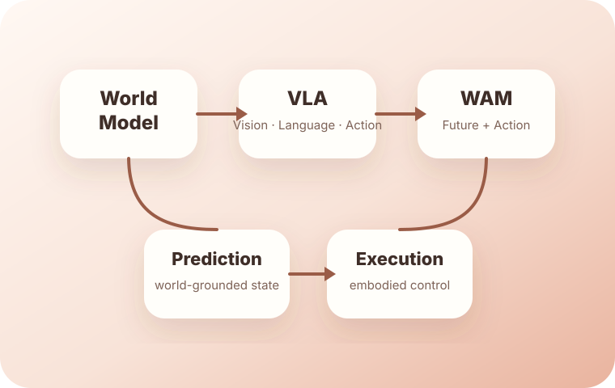

WAM 概述
定义 WAM，区分 WM、AC-WM 与 VLA，解释为什么 WAM 是独立范式。
Open overview →一个长期维护的世界动作模型研究导航站，聚焦 WAM 的技术范式、发展路线、代表论文与训练数据问题。

首页只保留总览与跳转。概述、路线图、论文和数据问题分别放在内部页面，方便未来长期维护和扩展。
定义 WAM，区分 WM、AC-WM 与 VLA，解释为什么 WAM 是独立范式。
Open overview →从 Dyna、World Models、Dreamer、MuZero 到 Genie/Sora 与 2026 年 WAM。
Open roadmap →结构化整理 DreamZero、UWM、Fast-WAM、RepWAM、MotuBrain 等工作。
Open papers →聚焦 WAM 的训练数据来源、数据集、数据工程与开放问题。
Open data survey →论文卡片由 data/papers.json 自动生成。后续新增论文时优先更新 JSON 文件。
WAM 的下一阶段竞争不是单纯扩大模型，而是围绕训练数据、动作表示、跨本体迁移和执行反馈形成新的具身智能基础设施。
长期更新时，优先维护 papers.json、datasets.json、timeline.json。页面结构已经预留扩展空间。
View references